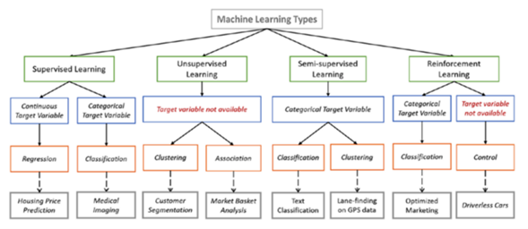

Inteligencia artificial (Artificial Intelligence, AI)
La inteligencia artificial se mencionó en 1956 en una conferencia informática. John McCarthy, de la Universidad de Dartmouth, reunió a destacados matemáticos y científicos para una extensa sesión de intercambio de ideas sobre inteligencia artificial. Concluyeron con una sugerencia: “Proponemos que se lleve a cabo un estudio de inteligencia artificial de 2 meses y 10 hombres durante el verano de 1956 en Dartmouth College… el estudio debe proceder sobre la base de la conjetura de que todos los aspectos del aprendizaje o cualquier otra característica de la inteligencia puede, en principio, describirse con tanta precisión que se puede hacer una máquina para simularla”. En ese momento, los algoritmos preliminares permitieron a las computadoras resolver ecuaciones algebraicas y hablar inglés. Hoy en día, la inteligencia artificial ha pasado de ser un campo académico a un actor clave dentro de las principales tecnologías sociales y económicas, incluido el reconocimiento de voz, el diagnóstico médico y, más recientemente, los vehículos autónomos y la asistencia activada por voz. La AI es esencialmente un sistema informático que reproduce la cognición humana utilizando datos a los que se accede desde una variedad de fuentes/sistemas diferentes para tomar decisiones y aprender de los patrones resultantes.
La AI también se considera la capacidad de una computadora para reconocer patrones y tomar medidas en función de los datos disponibles y los modelos estadísticos. La inteligencia artificial ha demostrado un rendimiento superior en numerosos campos, incluida la voz (p. ej., Alexa de Amazon, Siri de Apple y el Asistente de Google) y algoritmos de reconocimiento de patrones, procesos de supervisión en industrias, detección de fallas, previsión y especialmente en el sector de la salud para mejorar el proceso de tratamiento.
Clasificación de AI
Hay varias clasificaciones para la IA, pero se pueden considerar dos categorías distintivas. A continuación, se explican brevemente ambas clasificaciones y sus subclasificaciones.
- Primera Clasificación:
La primera clasificación es según la AI y las máquinas habilitadas para AI, su similitud con la mente humana y su capacidad para "pensar" e incluso "sentir" como humanos. Hay cuatro subclasificaciones para estos sistemas de AI o basados en AI: (a) máquinas reactivas, (b) máquinas de memoria limitada, (c) teoría de la mente y (d) AI autoconsciente. - Segunda Clasificación:
La segunda clasificación es un enfoque orientado a la tecnología, donde hay tres subclasificaciones: (a) Inteligencia Artificial Estrecha (ANI), (b) Inteligencia Artificial General (AGI) y (c) Superinteligencia Artificial (ASI).
Aumento de inteligencia (Intelligence Augmentation IA)
El aumento de inteligencia está diseñado para trabajar con personas y enfocarse en construir sistemas que aumenten y apoyen la cognición humana. Este concepto busca demostrar cómo la IA y los humanos pueden complementarse y coexistir de manera mutuamente beneficiosa. IA aborda el uso eficaz de la tecnología de la información para aumentar las capacidades humanas. IA deja al ser humano en el centro de la interacción humano-computadora. IA puede considerarse como un GPS en el que debe tomar la decisión y realizar la acción; en otras palabras, la toma de decisiones basada en evidencia. Este sistema de navegación le permite concentrarse en su conducción en lugar de preocuparse por la ruta a elegir. Se le recomienda la mejor ruta, pero deja la última decisión o acción a usted.
En términos de tecnología, las tecnologías de IA ayudan a ampliar el potencial humano aumentando la productividad laboral, facilitando el trabajo rutinario monótono y mejorando la comodidad en nuestras vidas. Por ejemplo, los autores académicos pueden beneficiarse de IA a través de los servicios ofrecidos por el software de corrección de escritura 'Grammarly', que no solo corrige la gramática, sino que también sugiere mejores formas de redactar oraciones mediante el uso de algoritmos.
En términos de innovaciones de IA relacionadas con la empresa, las gafas de Realidad Aumentada (AR), a veces conocidas como gafas inteligentes, se utilizan en una amplia variedad de industrias, incluidas la petrolera, la minería, la atención médica y la automotriz. Son anteojos de computadora portátiles que permiten al usuario ver información adicional además de lo que vería normalmente. Algunos ejemplos incluyen: Lenovo New Vision, que hace que la minería del carbón sea más inteligente y segura; ORLenz™, es utilizado por cirujanos que tratan a pacientes que sufren de degeneración macular; La tecnología AR de Fieldbit es utilizada por British Petroleum para traer experiencia fuera del sitio para ayudar a los técnicos en el sitio; BMW y Porsche también usan gafas AR para ayudar con las reparaciones.
AI vs. IA
El campo de la AI cree en sistemas autónomos que pueden imitar o reemplazar las funciones cognitivas humanas, mientras que el campo de la IA está más interesado en explotar las TI para complementar o apoyar la cognición humana, dejando al ser humano en el centro de la interacción humano-computadora. Por ejemplo, las soluciones basadas en AI requieren entornos estructurados donde se pueda considerar toda la información relevante y donde los objetivos del sistema estén claramente definidos para que la toma de decisiones basada en datos o algoritmos funcione perfectamente. Rui analiza algunas ideas interesantes al considerar el progreso de la AI y su potencial para aumentar la inteligencia humana. Zheng et al. afirmar que el objetivo a largo plazo de la AI es permitir que las máquinas piensen como humanos. Por lo tanto, queda la pregunta: ¿puede alguna computadora reemplazar verdaderamente la función de la mente humana?
Los objetivos del diseño de computadoras se pueden clasificar en tres secciones: la creación de una mente artificial (inteligencia artificial), la creación de una herramienta mental (aumento de la inteligencia) y control y comunicaciones. Las ideas, los esfuerzos y la investigación han pasado de una corriente a otra. Los límites entre estos flujos a veces se vuelven borrosos, pero siempre existen. Las diferentes interpretaciones de la relación entre los humanos, su entorno y la computadora mueven la aguja entre estas corrientes.
Algunos académicos definen la IA como una nueva forma de AI, ya que a menudo utilizan la misma tecnología. En ambos, existe una relación entre humanos y máquinas. Ambos funcionan en la mente: uno es humano y el otro es de silicio. Ambos permiten a una empresa escalar su transformación digital. Sin embargo, las diferencias entre estos dos conceptos estrechamente relacionados son más interesantes. Aunque las tecnologías subyacentes de AI e IA son las mismas, sus objetivos y aplicaciones son fundamentalmente diferentes. La IA coloca a los humanos en el centro del sistema y la toma de decisiones, mientras que la AI coloca la tecnología en el centro. Así, lo que el ser humano busca es la extensión, o aumento, de su inteligencia humana. Además, los sistemas de IA pueden superar las limitaciones impuestas por los límites del sistema en los sistemas de AI.
En general, AI quiere internalizar la conciencia artificial en una máquina, mientras que IA quiere externalizar la conciencia humana en una máquina. La AI se enfoca en la mente desapegada, pero la IA se enfoca en la mente/cuerpo en un contexto. Lo que es más importante, AI quiere producir una máquina independiente, mientras que IA quiere producir una máquina dependiente. Además, la AI no es adecuada para situaciones en las que los objetivos finales y las entradas no están bien definidos, lo que hace que la IA desempeñe un papel crucial. Esto es explorado más a fondo por Zheng et al., quienes argumentan que, debido a los altos niveles de incertidumbres y vulnerabilidades en la vida humana, las máquinas no pueden reemplazar completamente a los humanos. Curiosamente, proponen el concepto de inteligencia aumentada humana en el circuito a través de la colaboración humano-computadora. La siguiente tabla representa una posible clasificación de algunas tecnologías anticipadas y contemporáneas que se espera que transformen nuestras vidas y profesiones cotidianas.
| Inteligencia artifical | Aumento de inteligencia | |
|---|---|---|
| Empresa | Inteligencia artifical general: las máquinas pueden realizar cualquier tarea que un humano pueda, y mejor, y más rápido. |
|
| Vehículos autónomos |
|
|
| Robots industriales |
|
|
| Drones | Drones completamente autónomos que no requieren supervisión, intervención o procesamiento humano. | l
|
Tabla comparativa de AI vs IA
AI o IA: ¿cuál es el futuro?
Según Doraiswamy, la IA, que busca explotar las técnicas de aprendizaje automático para ayudar (en lugar de reemplazar) a los humanos, podría ser la verdadera revolución. La inteligencia aumentada es una formulación sustituta de la inteligencia artificial que se centra en el papel de la AI para ayudar y promover las capacidades humanas. El aumento de inteligencia refleja el efecto de avance de la AI en la expansión de la creatividad humana. Es poco probable que la inteligencia general supere a la inteligencia humana en los próximos 60 años. Sin embargo, se puede decir que la IA puede mezclar los resultados de los algoritmos de AI y llevar a los humanos a mejorar su desempeño. Ambos juegan un papel crucial en las organizaciones, como los institutos financieros donde los analistas pueden predecir el uso de datos en lugar de simplemente describirlos.
Varios académicos usan ambos términos juntos como inteligencia artificial aumentada para describir la tecnología. Por ejemplo, Grammarly se enfoca en ayudar al autor a sobresalir y brindar un grado de experiencia editorial en lugar de reemplazar la necesidad de un autor. Otra aplicación que combina AI e IA es Photoshop. Aquí, el factor importante es el costo del tiempo. Al aplicar AI aumentada, uno puede ahorrar tiempo y concentrarse en cosas más necesarias. Bromage analiza cómo la AI puede ser útil para los recursos humanos desde una perspectiva de IA. Como afirma Cha, los humanos que son expertos en la materia seguirán siendo necesarios para complementar los sistemas basados en AI, ya que estos requieren aplicaciones de contexto e intuición a los problemas.
En cuanto al futuro, Lavenda y Cagle opinan que los humanos permanecerán en el asiento del conductor durante los próximos años y que la AI tendrá que desempeñar el papel de ayudar a la IA en humanos al proporcionar capacidades para manejar estructurado y Big Data no estructurado de manera más eficiente. Si bien la AI es una amenaza para la humanidad en algunos aspectos, los seres humanos siempre han logrado adaptarse a las nuevas tecnologías y seguirán adaptándose a las disrupciones provocadas por la IA.
Como lograr una IA
Hay muchas formas en que se pueden lograr la IA, algunas de ellas son las siguientes
Los mas importantes entre ellos son los siguientes:
- APRENDIZAJE AUTOMATICO:
Es un método en el que se define el objetivo (objetivo) y la propia máquina aprende los pasos para alcanzar ese objetivo mediante el entrenamiento (ganando experiencia). Por ejemplo, para identificar un objeto simple como una manzana o naranja. El objetivo no se logra especificando explícitamente los detalles al respecto y codificándolo, sino que es como le enseñamos a un niño mostrándole múltiples imágenes diferentes y, por lo tanto, permitiendo que la máquina defina los pasos para identificarlo como una manzana o una naranja. - PROCESAMIENTO DEL LENGUAJE NATURAL (NLP):
El procesamiento del lenguaje natural se define en términos generales como la manipulación automática del lenguaje natural, como el habla y el texto , mediante software. Uno de los ejemplos más conocidos de esto es la detección de correo no deseado, ya que podemos ver cómo ha mejorado en nuestro sistema de correo. - VISION:
Se puede decir como un campo que permite a las máquinas ver. La visión artificial captura y analiza información visual mediante una cámara, conversión de analógico a digital y procesamiento de señales digitales. Se puede comparar con la vista humana, pero no está limitada por la limitación humana que le permite ver a través de las paredes (eso sería interesante si pudiéramos tener implantes que nos hicieran ver a través de la pared). - ROBOTICA:
Es un campo de la ingeniería centrado en el diseño y fabricación de robots. Los robots a menudo se utilizan para realizar tareas que son difíciles de realizar para los humanos o realizarlas de manera consistente. Los ejemplos incluyen líneas de ensamblaje de automóviles, en hospitales, limpieza de oficinas, servicio de alimentos y preparación de alimentos en hoteles, patrullando áreas agrícolas e incluso como oficiales de policía. Recientemente, el aprendizaje automático se ha utilizado para lograr ciertos buenos resultados en la construcción de robots que interactúan socialmente ( Sophia ). - VEHÍCULOS AUTÓNOMOS:
Esta área de la IA ha llamado mucho la atención. la lista de vehículos incluye automóviles, autobuses, camiones, trenes, barcos, submarinos y drones voladores con piloto automático, etc. Los coches autónomos generan datos de su entorno y los alimentan al agente inteligente, que a su vez toma decisiones y permite que un vehículo autónomo realice actividades específicas en casi un mismo entorno, se establece un bucle repetitivo llamado ciclo de actividad de percepción. La siguiente figura muestra el flujo de datos del vehículo autónomo.
¿Por qué la IA necesita del aprendizaje automático?
Supongamos que podemos codificar todas las propiedades en la identificación de frutas donde cada función contiene propiedades enumeradas como en la programación tradicional.
- Color : " Rojo " - " Naranja "
- Forma : " No completamente circular " - " círculo "
- “ El tallo está presente ” — “ El tallo no está presente ”
y muchas más propiedades, ¿verdad? ( Si tiene más propiedades, enumere en su mente o en papel por ahora ) en este caso la IA no tiene problemas en identificar cada objeto sin embargo no sucede lo mismo con las siguientes imágenes

Ahora todos estamos de acuerdo en que se necesitan métodos mucho mejores que los listados de propiedades tradicionales en funciones. Entonces ahora surge la necesidad de un método diferente de codificación y tenemos el aprendizaje automático para nuestro rescate.
Aunque es una versión vaga de lo que es un ML, la caja negra puede considerarse como nuestro cerebro donde necesitamos dar entradas (imágenes) de naranja, manzana, gato, perro, fregona, etc. y también decir la salida de esas imágenes. y entrenarlo.
Al igual que un niño aprende viendo imágenes en las que le enseñamos qué es un objeto en lugar de decirle las propiedades de inmediato. Cuando se da una imagen completamente diferente que no estaba presente en la entrada de entrenamiento, aún debe identificarla en consecuencia.
En un caso de Dog vs Mop, la identificación considera que se le dan 10.000 imágenes de cada uno y se muestran como dog y mop respectivamente. Ahora, después de que se entrena, si se proporciona una nueva imagen que no está presente en absoluto en las 10,000 imágenes de entrenamiento, aún debe identificarla correctamente.
Aquí se muestra la respuesta (salida) para cada imagen (entrada), pero cuando se proporciona una nueva imagen, aún debe identificarla correctamente como un ser humano.
Los niños también, después de ver varias veces imágenes de perros cuando ven una nueva raza de perro, todavía lo identifican como un perro, ese es todo el concepto aquí.
Como se ve arriba, la propiedad para identificar cada imagen la realiza el propio algoritmo en lugar de programarlo manualmente. " La máquina está aprendiendo por sí misma " aquí, donde solo proporcionamos datos para el entrenamiento.
Tipos y algoritmos de aprendizaje automático
Hay cuatro tipos de aprendizaje automático
-
Aprendizaje supervisado: " El resultado o la salida de la entrada dada se conoce antes que ella misma" y la máquina debe poder mapear o asignar la entrada dada a la salida. Múltiples imágenes de un gato, perro, naranja, manzana, etc. aquí las imágenes están etiquetadas. Se introduce en la máquina para entrenamiento y la máquina debe identificarlo. Al igual que a un niño humano se le muestra un gato y se lo dice, cuando ve un gato completamente diferente entre otros todavía lo identifica como un gato, aquí se emplea el mismo método.
Puntos clave:
- Los problemas de regresión y clasificación se resuelven principalmente aquí.
- Los datos etiquetados se utilizan aquí para el entrenamiento.
- Algoritmos populares: regresión lineal, máquinas de vectores de soporte (SVM), redes neuronales, árboles de decisión, Naive Bayes, vecino más cercano.
- Se utiliza principalmente en el modelado predictivo.
-
Aprendizaje no supervisado: "Se desconoce el resultado o la salida de las entradas dadas", aquí se dan los datos de entrada y el modelo se ejecuta en ellos. La imagen o la entrada proporcionada se agrupan aquí y se puede encontrar información sobre las entradas aquí (que es la mayor parte de los datos del mundo real disponibles). Los principales algoritmos incluyen algoritmos de agrupamiento ( ) y algoritmos de aprendizaje.
Puntos clave
- Se utiliza para problemas de agrupamiento ( agrupación ), detección de anomalías (en bancos para transacciones inusuales) donde existe la necesidad de encontrar relaciones entre los datos proporcionados.
- Los datos no etiquetados se utilizan en el aprendizaje no supervisado.
- Algoritmos populares: agrupación de k-medias, regla de asociación.
- Se utiliza principalmente en modelado descriptivo.
-
Aprendizaje semisupervisado: está entre el aprendizaje supervisado y no supervisado. Donde la combinación se usa para producir los resultados deseados y es lo más importante en escenarios del mundo real donde todos los datos disponibles son una combinación de datos etiquetados y no etiquetados.
-
Aprendizaje Reforzado: La máquina es expuesta a un ambiente donde es entrenada por método de prueba y error, aquí es entrenada para tomar una decisión muy específica. La máquina aprende de la experiencia pasada e intenta capturar el mejor conocimiento posible para tomar decisiones precisas basadas en la retroalimentación recibida.
Puntos clave:
- El refuerzo básico se modela como el proceso de decisión de Markov.
- El algoritmo más popular utilizado aquí es Q-aprendizaje,Redes antagónicas profundas.
- Sus aplicaciones prácticas incluyen juegos de mesa de computadora como ajedrez y GO, los autos sin conductor también usan este aprendizaje.
Para poner lo anterior en pocas palabras, vea la imagen a continuación de en.proft.me:

Una pequeña aplicación
El problema de Wumpus World plantea que una Inteligencia Artificial encuentre tesoros en un área mientras evita las trampas y el monstruo Wumpus. Una vez que se encuentra el tesoro, la IA debe regresar a su ubicación inicial de manera segura. En la siguiente página web, es posible observar el comportamiento de la IA dando recomendaciones al usuario sobre... donde moverse. Es una forma bastante práctica de aplicar y observar la IA y la AI.
Referencias
- Hassani, H.; Silva, E.S.; Unger, S.; TajMazinani, M.; Mac Feely, S. Artificial Intelligence (AI) or Intelligence Augmentation (IA): What Is the Future? AI 2020, 1, 143-155. https://doi.org/10.3390/ai1020008
- C. Kumar, "Artificial Intelligence: Definition, Types, Examples, Technologies," 31 August 2018. [Online]. Available: https://medium.com/@chethankumargn/artificial-intelligence-definition-types-examples-technologies-962ea75c7b9b.
- S. Gadam, "Artificial Intelligence and Autonomous Vehicles," 19 April 2018. [Online]. Available: https://medium.com/datadriveninvestor/artificial-intelligence-and-autonomous-vehicles-ae877feb6cd2.
- Kumar Gn, C. (2019, 17 junio). Machine Learning Types and Algorithms - Towards Data Science. Medium. https://towardsdatascience.com/machine-learning-types-and-algorithms-d8b79545a6ec
- Kumar Gn, C. (2019b, junio 17). Why Machine learning for achieving Artificial Intelligence? “ The Need for Machine Learning “. Medium. https://medium.datadriveninvestor.com/why-machine-learning-for-achieving-artificial-intelligence-the-need-for-machine-learning-c69667b4a51f
- Becker, K. (s. f.). Wumpus World - AI Game Using Logical Artificial Intelligence. Https://Primaryobjects.Github.Io/Wumpus/. Recuperado 4 de junio de 2022, de https://primaryobjects.github.io/wumpus/
Recopilación realizada por:
Edgar Miguel Rubio Guerrero
Gustavo Aquino Paz
Luis Fernando Almanza Alvarado
Manuel Cruz Quixtiano
Misael Ceballos Campos